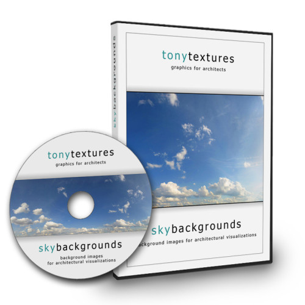

Architecture VIZ Graphics – Sky Background Rendering Images
Product profile · Marketplace data 2026-10-09 · Sales-page research 2026-10-09 · Categories: Hobby & Craft, Photography & Film, Profession & Job

Marketplace record
| Product type | Downloads |
|---|---|
| Price | $33.19 (Single payment) |
| Affiliate commission | 25% |
| Refund window | Per the vendor's sales page — check the official page before buying |
| Vendor | Tonytextures (listed since 2026-09-13) |
| Marketplace stats* | Cart conversion — · cancel rate — · affiliate earnings/sale $8.30 |
* Vendor-side marketplace statistics reported by Digistore24; they depend on traffic quality and are not a forecast.
Vendor's marketplace description
Architecture VIZ Graphics – Sky Backgrounds Professional graphic collections for architectural visualizations by Tonytextures — designed for architects, landscape designers and ArchVIZ studios. 80 professional sky background images for architectural renderings — from clear blue to dramatic overcast, all optimized for ArchVIZ use. Find all information and free sample downloads on the product page:h…
From the vendor's sales page
Page title: Sky Backgrounds Image Collection for Photoshop and Renderings
Meta description: High resolution sky images that can be used as background graphics in Photoshop or 3D architectural renderings. Download free hi res sky sample image of 12,000 px x 3,200 px size.
Headline
Sky Backgrounds Image Collections for Photoshop etc.
Sky Backgrounds for Architecture Visualizations
Section headlines
- Customer Voice:
- Product Details:
- High Quality and High Image Resolution
- Test before you buy: Hi Res Sky Example for Free Download:
- Sounds interesting?
- License Agreement?
- Any Questions Left?
- Footer
Guarantee language found: “60” — always confirm the current terms on the official page before relying on it.
Opening copy
For an impressing architectural illustration high quality graphics are essential. This collection comes up with a plenty of high resolution sky background images that can be used either directly in your 3d rendering tool or in the post production of your rendering in e.g. Adobe Photoshop to place it behind your building scenery.
Based on daily experience often rather abstract sky backgrounds images are more useful in architecture visualisation because the focus of the final illustration will still be on the building.
"excellent sky image for my architectural presentation" Nathan Donaldson, Architectural Technology Student, Toronto/Canada
Research method: raw HTML fetch · 731 words on page · quality: rich · researched 2026-10-09. Full research file (MD) ↗
Where to check it out
Read the vendor's full sales page (current price, guarantee terms and bonuses are listed there):
View official sales page
That link is an affiliate link — if you buy through it we earn a commission from the vendor at no extra cost to you.